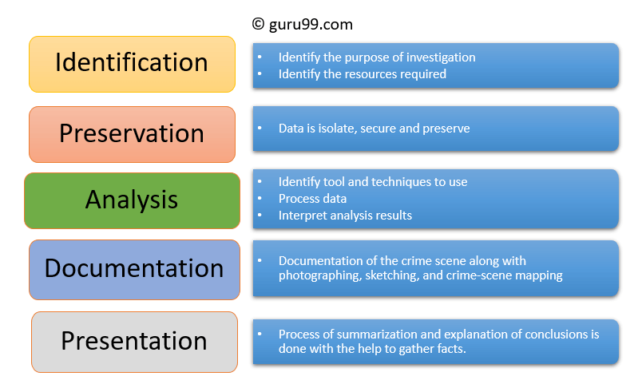
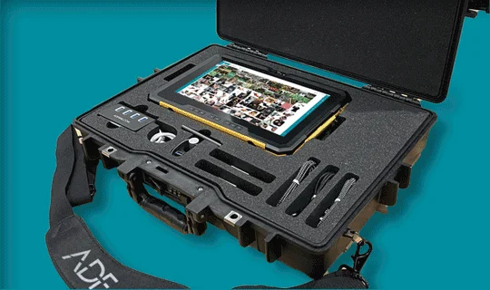
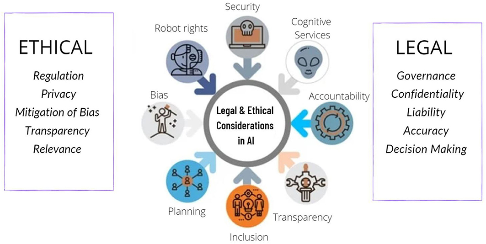

In an increasingly digital world, the importance of cyber security cannot be overstated. In this blog article, we'll delve into the realm of digital forensics—a crucial aspect of cyber security. Learn how digital forensics experts investigate cybercrimes, recover data, and analyze digital evidence to uncover the truth. We'll explore real-world case studies and highlight the tools and techniques used to solve complex cyber incidents. Whether you're a tech enthusiast, a student of cyber security, or simply curious about the inner workings of digital investigations, this post offers an intriguing glimpse into the world of digital forensics.

Introduction
Welcome to a fascinating journey into the realm of cyber security and digital forensics! In this in-depth exploration, we'll shed light on the vital role of digital forensics in today's digital landscape. Whether you're looking to gain insights into the world of cyber investigations or simply want to expand your knowledge, you're in for an enlightening experience.

The Significance of Digital Forensics:
Digital forensics plays a critical role in uncovering digital evidence and analyzing cyber incidents. Learn how experts leverage their skills to identify, preserve, and examine digital artifacts that are crucial for solving cybercrimes and ensuring digital accountability.

Understanding the Investigative Process:
Step into the shoes of a digital forensics investigator as we walk you through the investigative process. From the initial collection of evidence to the meticulous analysis and reporting stages, you'll gain a comprehensive understanding of how digital forensics experts approach complex cases.
Real-World Case Studies:
Explore real-life examples of digital forensics in action. We'll delve into high-profile cyber incidents and showcase how digital evidence was instrumental in unraveling the mysteries behind these cases. Discover the pivotal role that digital forensics plays in law enforcement, corporate security, and beyond.
Tools and Techniques of the Trade:
Uncover the arsenal of tools and techniques used by digital forensics professionals. From forensic software and hardware to specialized data recovery methods, we'll introduce you to the technology that empowers investigators to extract valuable information from digital devices.
Ethical and Legal Considerations:
Delve into the ethical and legal aspects of digital forensics. Learn about the importance of maintaining integrity throughout the investigation process and adhering to legal guidelines. Understand the challenges and responsibilities that come with handling digital evidence.
Charting a Path in Digital Forensics:
For those aspiring to enter the field of digital forensics, we'll provide insights into potential career paths, required skills, and recommended certifications. Whether you're considering a career transition or aiming to advance your cyber security expertise, this section will serve as a valuable roadmap. As you embark on this exploration of digital forensics, you'll gain a deeper appreciation for the crucial role it plays in safeguarding our digital world. Whether you're a seasoned professional or simply intrigued by the intricacies of cyber investigations, this blog entry offers a captivating glimpse into the realm of digital forensics.